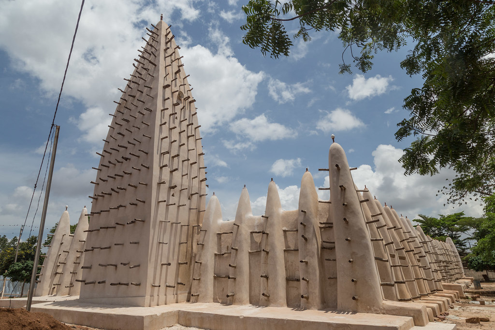
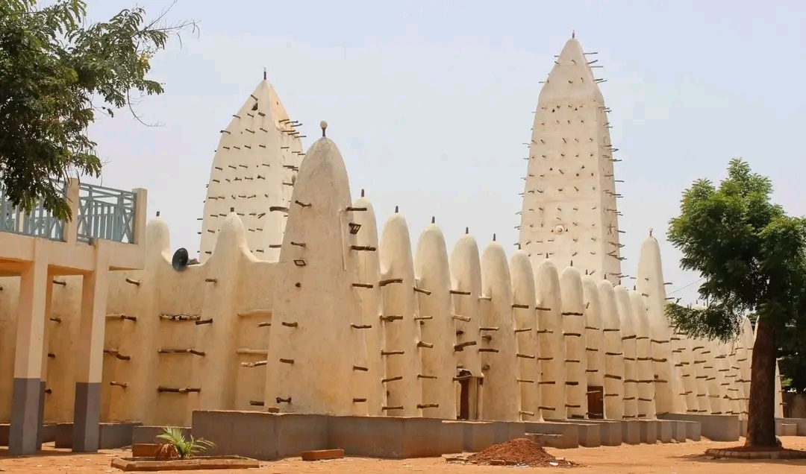

Au cœur de Bobo-Dioulasso, deuxième ville du Burkina Faso, se dresse une architecture saisissante : la Grande Mosquée de Dioulassoba, souvent appelée “mosquée de Dioulasso-bâ”. Avec ses minarets effilés en banco, ses contreforts massifs et ses poutres de bois jaillissant des murs, elle incarne la force tranquille d’un patrimoine à la fois religieux, historique et culturel. Véritable emblème de la ville, elle attire aussi bien les fidèles que les curieux venus découvrir l’ingéniosité de l’architecture soudanaise.
La construction de la mosquée remonte à la fin du XIXᵉ siècle, sous l’impulsion de l’imam Sidiki Sanou. Mais les versions divergent : certains affirment qu’elle aurait été érigée dans les années 1880, tandis que des récits oraux font remonter ses premières pierres au début du XIXᵉ siècle. Quoi qu’il en soit, elle fut bâtie dans un contexte de résistance et de réorganisation face aux guerres, notamment lors du passage de Samory Touré, figure incontournable de l’histoire ouest-africaine. La mosquée devient dès lors un repère spirituel mais aussi un symbole d’ancrage pour la communauté.
La mosquée de Dioulassoba est un chef-d’œuvre de l’architecture soudanaise, caractérisée par l’utilisation du banco, un mélange de terre argileuse et de paille. Ses murs épais, ses minarets élancés et ses contreforts massifs témoignent d’une construction pensée pour résister aux intempéries tout en offrant une esthétique unique. Les poutres de bois qui émergent des murs ne sont pas seulement décoratives : elles servent aussi à renforcer la structure et à faciliter les réparations. Chaque année, la communauté se mobilise pour entretenir ce patrimoine vivant, perpétuant ainsi un savoir-faire ancestral.
La mosquée n’est pas un simple vestige figé. Elle reste un lieu de prière actif, animé chaque vendredi par les fidèles du quartier et de toute la ville. Parallèlement, elle est devenue une attraction touristique majeure, inscrite dans les circuits culturels de Bobo-Dioulasso. Des guides locaux y racontent l’histoire, les légendes et la symbolique de ses murs, offrant aux visiteurs un voyage dans le temps et la spiritualité.
